![The picture shows a short story to explain rest and motion are relative in nature. This is comical story. the story goes like this, Anitha and babu are standing under a tree at the bus stand waiting for a bus to Madurai. Two of their friends, Reka and Mohan, get into a bus to go to Thanjavur. The bus starts. Anitha asks Hey babu would you say that Mohan is in motion? Babu replies yes, of course. Anitha asked again How can you say that? I can see he is just sitting in the bus! Babu replied Yes, but the bus is moving is not it? Anitha replied so what? Now Babu told you never believe me, ask reka. Now Anitha took moile and called reka and asked hay Reka, do you think mohan is moving? for this qustion Reka replied as No Mohan is not. He is just sitting in one place.](images/image-38.png)
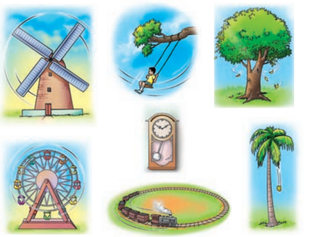
To identify that push or pull or both are involved when there is a motion.
To understand that some forces are contact forces and some are non-contact forces.
To know that when a force is applied, it can make things move, change the direction or change its shape and size.
To distinguish between rest and motion and understand that they are relative.
To infer motion is caused by application of force.
To classify different types of motion.
To deduce the definition of speed.
To understand and use the unit of speed.
To distinguish uniform and non-uniform motion.
To compute time, distance and speed.
We have studied in our earlier classes that push or pull results in some motion of the object. When we open the door or kick a football or lift our school bag, motion is involved and there is some push or pull.
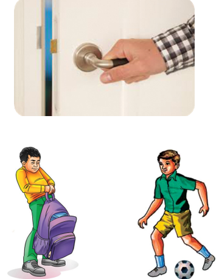
What is rest? What is motion?
Suppose there is a book on your table right in the middle. Is the book moving? You will say it is not moving; it is at rest. If you push the book to one side of the table to clear the space for keeping your notebook, then you will say the book is moving. When the book was at the same place with respect to the table, it was at rest; but when it was pushed from one place on the table to another place, it was moving.
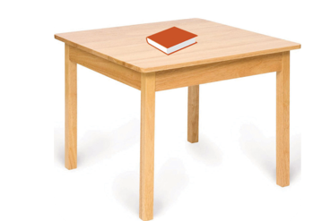
Activity 1
Can you identify whether it is push or pull that results in motion in the following cases?
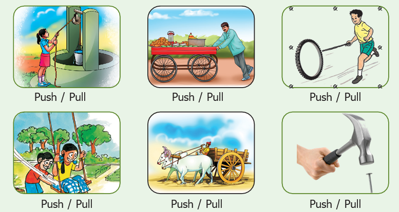
When there is a change in the position of an object with respect to time, then it is called motion. If it remains stationary it is called rest.
Is Mohan in motion?
Observe the following pictures and say whether Mohan is in motion or at rest
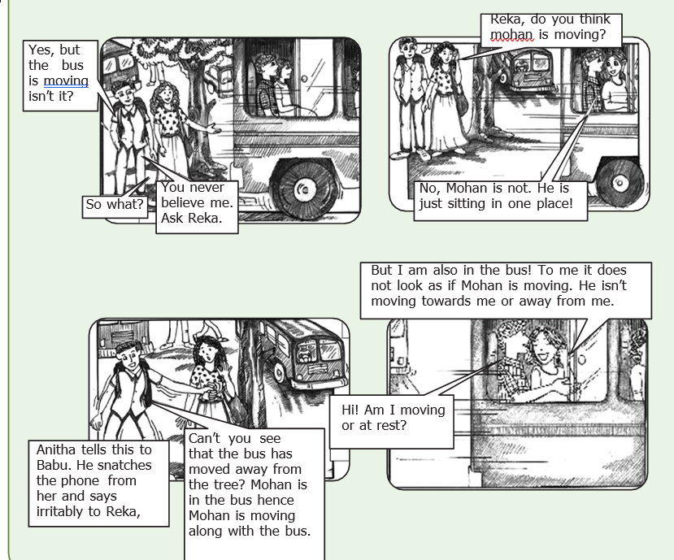
Discuss: Who is correct? Is Mohan really in motion?
We can clearly say that both Reka and Babu are correct. From the point of view of Babu, Mohan along with the bus is in motion; but for Reka who is sitting beside him, he is at one place; therefore stationary. So, according to Babu, Mohan is in motion; Mohan is at rest from Reka's observation. Can you think any other examples?
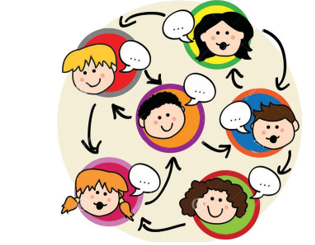
Answer by observing the situation in the picture
Event 1: The man in the boat is moving with respect to the bank of river. He is at rest with respect to the boat.
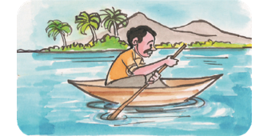
Event 2:
The girl on the swing is dash with respect to the seat of the swing.
She is dash with respect to the garden.
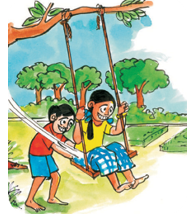
Event 3: Nisha is going to her grandmother's house by bicycle. Sitting on the bicycle, Nisha is dash with respect to the road. She is dash with respect to the bicycle.
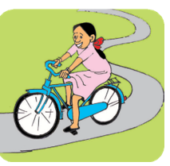
Take the case of a book on a table at rest. Is it really without any motion? We know that Earth is rotating on its axis; therefore the table along with the book must be rotating. Is it not? We are also moving along with the earth. Therefore, from the point of view of the ground on which we stand, the book is at ‘rest’. Similarly, while travelling in a bus, we feel that the poles and trees seem to move backwards, and the things inside the bus are stationary.
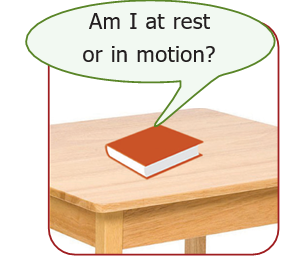
An object may appear to be stationary for one observer and appear to be moving for another. An object is at rest in relation to a certain set of objects and moving in relation to another set of objects. This implies that rest and motion are relative.
Activity 2
Moon or Cloud?
Observe the moon on a windy night with a fair bit of cloud cover in the sky. As the cloud passes in front of the moon you sometimes think it is the moon which is moving behind the cloud. What would you think if you were to observe a tree at same time ?.
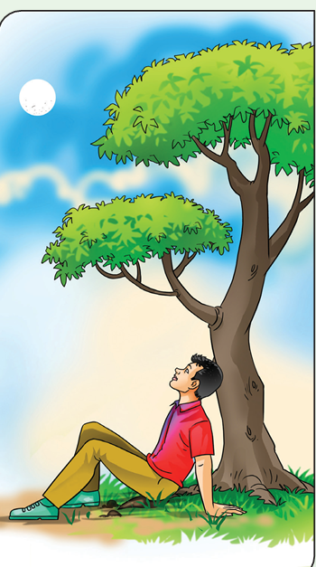
How things move?
When we kick a ball it moves. When we push the book on the table, it moves. When a bullock pulls, the cart moves. Motion occurs when an object is pulled or pushed by an agency.
In our daily life, we pull out water from the well using bucket. Animals pull a bullock cart. It is a person or animal, that is an animate agency that does the pushing or pulling.
Sometimes we see a tall grass in the meadow dancing in the wind or a piece of wood moving down a stream. What pushes or pulls them? We know that blowing wind and flowing water is the cause. Sometimes the push or pull can be due to the inanimate agency.
Forces are push or pull by an animate or inanimate agency.
Contact, Non-contact Forces
Forces can be classified into two major types; contact and non-contact forces.
Wind making a flag flutter, a bullock pulling a cart are contact forces. Magnetism, gravity are some examples of non-contact forces.
In all the above cases, the force is executed by touching the body. So, this type of forces are called contact forces.
Mysteriously, ripen coconut falls to the ground. What pulls it to the ground? We would have heard about ‘force of gravity’ of Earth. Gravity pulls the ripen coconut from the tree to the ground.
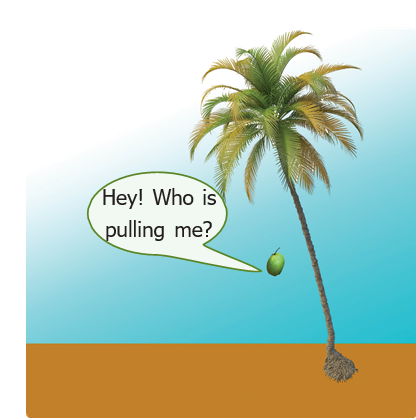
When we bring a magnet near a small iron nail, the nail jumps into the air and sticks with the magnet. Observe that the magnet and the nail did not touch each other. Still, there was a pulling force that made the nail to jump towards the magnet. In these two examples, the force is applied without touching the object. Such forces are known as non-contact forces.
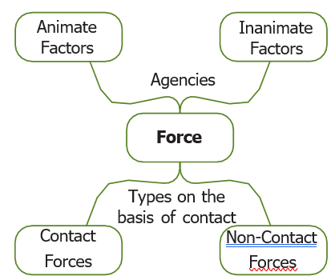
What happens when we apply a force on an object?
What happens when you apply a force on an object? Say, you push a book on the table. The book moves. Application of force in an object results in motion from a state of rest.
What happens when a batsman hit a ball? The ball is already in motion, but with the strike, the speed of the ball increases. Moreover the direction of the ball changes. Application of force on an object results in a change in its speed and change in its direction.
When we crush a balloon or press roti dough or pull a rubber band, the shape of the object changes on application of force. Application of force in object results in expansion or contraction.
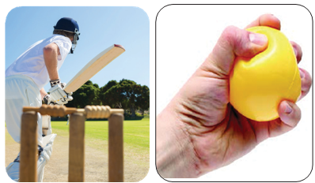
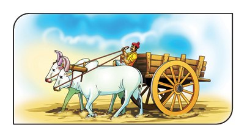
Look at this picture. The person is applying force to stop the cart from moving. When the force is applied against the direction of the motion, the speed can be reduced, or even the motion is stopped completely. Discuss what happens when you apply break in a speeding bicycle.
In a nutshell, we can say that the applied force is an interaction of one object on another that causes the second object to move from rest, speed up, slow down, stop the motion, change the direction, compress or expand.
Forces can
1. Change the states of a body from rest to motion or motion to rest.
2. Either change the speed or direction or both of the body.
3. Change the shape of the body.
Activity 3
Fill in the empty spaces
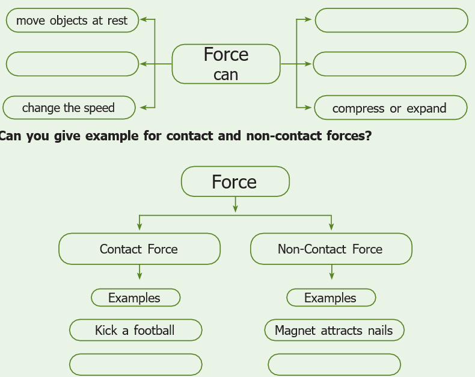
Activity 4
Do what Shanthi did.
Play with pencil
(1) Shanthi took a pencil and sharpened it with a sharpener. (ii) Then she drew a circle using the pencil and a compass. (iii) Later she took her ruler within bracket (scale) and drew a straight line in another paper. (iv) Then she kept the pencil between her fingers and moved it back and forth.
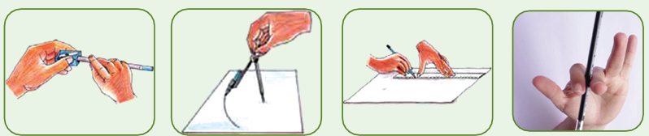
Now, look at the motion of the pencil in all these four cases. How was it?
(1) In the first case, the pencil rotated in its axis.
(ii) In the second case, it went in a circle.
(iii) In the third case, the pencil travelled in a straight line.
(iv) In the fourth case, the pencil tip moved back and forth, that is it oscillated like a swing.
We can say that the motion of the pencil was rotational, circular, straight line or linear and later oscillatory.
Throw paper aeroplanes or paper dart. Watch its flight path when you throw it at an angle. The path curves that is the paper flight is moving ahead but its direction is changing while moving. Such paths are called curvilinear.
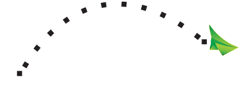
A fly buzzing around the room is a combination of all these motions and flight path is zigzag.
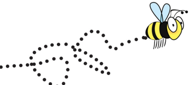
You can classify the motion according to the path taken by the object.
a. Linear motion- Motion in a straight line. Example A person walking on a straight path.
b. Curvilinear motion - Motion of a body moving ahead but changing direction. Example Motion of a ball thrown.
c. Circular motion - Motion in a circle. Example Swirling stone tied to the rope.
d. Rotatory motion - Motion of a body about its own axis. Example Rotating top.
e. Oscillatory motion - A body coming back to the same position after a fixed time interval. Example A pendulum.
f. Zigzag (irregular) - The motion of a body in different direction. Example People walking in a crowded street.
Do you know
Oscillations at Greater Speed
Ask your friend to hold the two ends of a stretched rubber band. Strike it in the middle. Do you see that it oscillates very fast? When the oscillation is very swift, it is called as vibration.
Fast oscillations are referred to as vibrations.
Activity 5
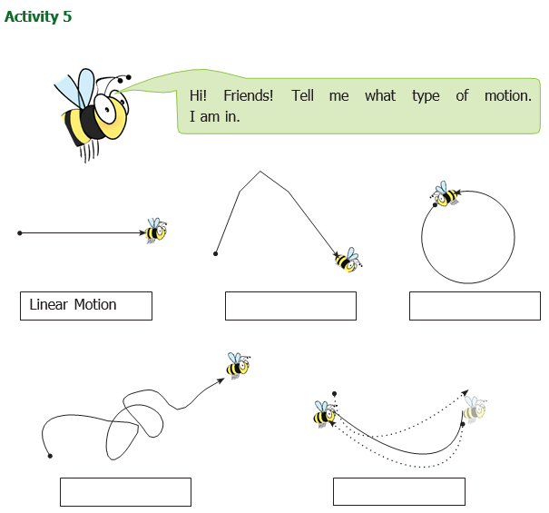
Activity 6
Classify the following according to the path it takes.
Linear, Curvilinear, Circular, Rotatory, Oscillatory, Zigzag (irregular)